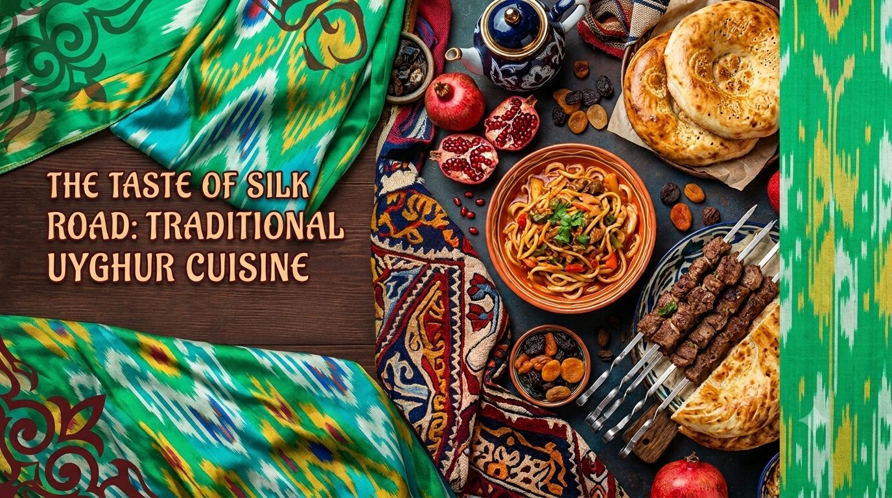

A table set the Uyghur way
Arzu means "longing" — for home, for a familiar meal, for a table where tea is always poured for the next guest. That's the feeling we build every service: noodles pulled by hand, bread baked to order, and lamb tended over open coals the way it's done across the Uyghur homeland.
Every recipe here has been passed down rather than invented — adjusted only by the hands that have made it a thousand times before. We hope you leave the table the way guests always have: fed, unhurried, and already planning your next visit.
Who we are
Arzu opened in 2025 in Mount Prospect. Our owners, Shavkat Isakov and Durdona Abakdzhanova, come from a region of Kyrgyzstan that borders Xinjiang, the homeland of the Uyghur people, and the cooking here comes from that part of the world. Chef Abdu brings more than 15 years of experience cooking traditional Uyghur and Central Asian dishes.
Made from scratch, every day
Every dish at Arzu is prepared daily from scratch. We pay close attention to the freshness of our ingredients, and we keep the old recipes as they are. Our laghman is one of the dishes we're proudest of: the noodles, a main part of the dish, are pulled by hand using traditional methods, and that is what makes it special.